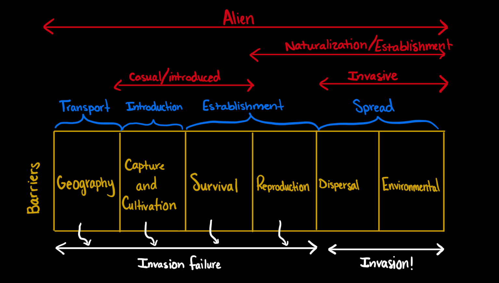

Invasive Plant
A plant that are non-native plants that cause economic, environmental, or human harm.
Native
Plants evolved in a region and for that region.
However some plants have been around for so long that they're just assumed to be native, but they are not.
Non-Native
Plants that are introduced to the region whether it was intentionally or not.
Naturalized:
Plants that are non-native and can maintain a population without human aid
Noxious
A legal distrinction by a natural resource or agricultural authority so that plant can be regulated.
Poses serious threats and eradication is required.
Weed
Any plant that is in a place where it is not wanted.

Phases of Invasion (refer to the diagram above)
Transport: Getting the plant or the seeds to a new place
-Modes of transportation:
-Natural: Floods, wind, animals, etc
-Human: Horticulture, shoe traffic, seed contaimination, etc
Introduction: successfully having the plant live in the new place
Establishment: The process of surviving and reproducing in the new environment
Spread: The plant becomes invasive by excessive reproduction and ability to quickly spread to nearby locations.
The "Tens Rule" : 1/1000 of transported plants become invasive.
Invasions are hard to spot early on because by the time we realize a species is invasive, it has already spread and started to negatively affect the environment or other aspects of society.
Theories of Invasion:
Empty niche or disturbance
Absense of enemies
Novel Weapons that native organisms aren't used to
Propagule Pressure ("success in numbers")
Invasional Meltdown: one new organisms comes in a breaks down the ecosystem
Phenotypic Plasticity